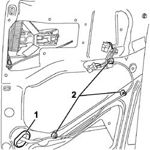
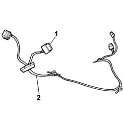

5505B31 SLIDING SIDE DOOR INCORPORATING WIRING WITH SLIDING SIDE DOOR PANEL REMOVED. S-R
- Path
- Procedures > 55 ELECTRICAL EQUIPMENT > 5505 INSTRUMENT/GAUGE ELECTRICAL CIRCUITS > 5505B DOOR,BOOT AND BONNET WIRING. > 5505B31 SLIDING SIDE DOOR INCORPORATING WIRING WITH SLIDING SIDE DOOR PANEL REMOVED. S-R
- Kind
- repair procedure (removal / refitting; the operation number is the code)
- Applies to
- all engines; all production periods
- Interactive page
- https://sloeber94.github.io/elrnDB-fUlss/en/#/179007530
Applies to: all engines; all production periods
 Removing
Removing
 Refitting
Refitting- Carry out
Op. 5530B56 BATTERY DRIP TRAY COVER - R.R.
- Carry out
Op. 7050A02 SIDE REAR INDIVIDUAL SEAT (ONE), LEFT OR RIGHT - R.R.
- Carry out
Op. 7020D32 SLIDING SIDE DOOR INTERIOR OPENING HANDLE/ESCUTCHEON (INTERIOR) - R.R.
- Carry out
Op. 7020C30 SLIDING DOOR INTERIOR PANEL - R+R
- Carry out
Op. 7020C02 SLIDING SIDE DOOR WATER PROTECTION - R.R.
- Carry out
Op. 7020D34 SLIDING DOOR INTERIOR HANDLE - R+R
- Carry out
Op. 7020D62 KNOB FOR SLIDING SIDE DOOR SAFETY DEVICE, LEFT OR RIGHT - R.R.
- Carry out
- Carry out
Op. 7020D20 INTERIOR/EXTERIOR HANDLE PROTECTION FOR ONE SLIDING SIDE DOOR - R.R.
1. Prise the cable duct lining out of the sliding door frame.
2. Undo the retaining bands for the wiring.

Applies to: all engines; all production periods
1 Working from inside the interior/exterior handle compartment protection seat, disconnect the window motor electrical connector.
2. Remove the sliding side door built in wiring.

Applies to: all engines; all production periods
Refitting
Removing- Carry out
Op. 7020D20 INTERIOR/EXTERIOR HANDLE PROTECTION FOR ONE SLIDING SIDE DOOR - R.R.
- Carry out
- Carry out
Op. 7020D62 KNOB FOR SLIDING SIDE DOOR SAFETY DEVICE, LEFT OR RIGHT - R.R.
- Carry out
Op. 7020D34 SLIDING DOOR INTERIOR HANDLE - R+R
- Carry out
Op. 7020C02 SLIDING SIDE DOOR WATER PROTECTION - R.R.
- Carry out
Op. 7020C30 SLIDING DOOR INTERIOR PANEL - R+R
- Carry out
Op. 7020D32 SLIDING SIDE DOOR INTERIOR OPENING HANDLE/ESCUTCHEON (INTERIOR) - R.R.
- Carry out
Op. 7050A02 SIDE REAR INDIVIDUAL SEAT (ONE), LEFT OR RIGHT - R.R.
- Carry out
Topics linked from this page (9)
- 5530B56 BATTERY DRIP TRAY COVER - R.R.
- 7020D20 INTERIOR/EXTERIOR HANDLE PROTECTION FOR ONE SLIDING SIDE DOOR - R.R.
- 7020D32 SLIDING SIDE DOOR INTERIOR OPENING HANDLE/ESCUTCHEON (INTERIOR) - R.R.
- 7020D34 SLIDING DOOR INTERIOR HANDLE - R+R
- 7020D58 SLIDING SIDE DOOR INTERIOR OPENING RELAY DEVICE (WITH HANDLE) (ONE) R.R. FOR REPAIR OR REPLACE
- 7020D62 KNOB FOR SLIDING SIDE DOOR SAFETY DEVICE, LEFT OR RIGHT - R.R.
- 7020C02 SLIDING SIDE DOOR WATER PROTECTION - R.R.
- 7020C30 SLIDING DOOR INTERIOR PANEL - R+R
- 7050A02 SIDE REAR INDIVIDUAL SEAT (ONE), LEFT OR RIGHT - R.R.